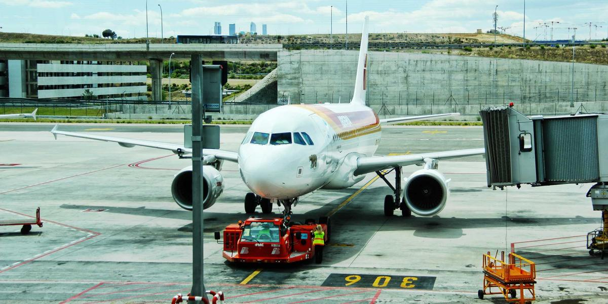

Alemania dice sí al Mundial 2026: descarta boicot pese a tensiones políticas
Por History_apa•

La Federación Alemana de Fútbol (DFB) confirmó que su selección participará en el Mundial 2026 en Estados Unidos, Canadá y México, descartando cualquier boicot. La decisión busca separar el deporte de...